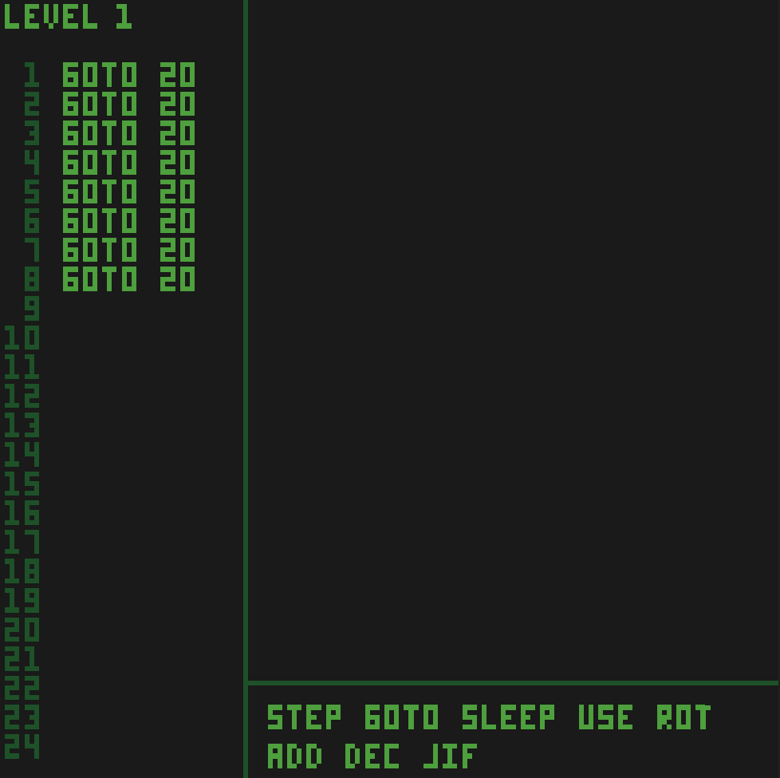

WASM-4 Game Jam: Day 1
The second WASM-4 game jam is going on right now! I missed out last year due to COVID, but this year I am determined to finish. Hopefully by writing a little blog about it every day I will force myself to follow through.
Intro
From the WASM-4 website:
Build retro games using WebAssembly for a fantasy console
By "fantasy console" they mean a console with 4 color 160x160 pixel screen, 64KB of memory, and 1KB of storage. And you have to build it using WebAssembly, or something that compiles to WebAssembly (C, C++, Rust, etc.).
I love the contrast of using a bleeding edge technology like WebAssembly to build retro games. The WASM-4 people make it super easy to get started, and you don't even need any WebAssembly experience to make something awesome.
Brainstorming
There doesn't seem to be a theme like there was last year, so I'm just coming up with something on my own. I really wanted to make a rouge-like/Minecraft/Terraria clone of sorts, and then it hit me: They recently added multiplayer functionality, and my initial thoughts where that I could somehow link 4 instances together, effectively quadrupling my memory and storage.
Turns out that they all share the same memory, and saving/reading from disk is not allowed when network sharing is enabled. Then I decided that making a high quality rouge-like with world generation would probably be too hard, especially given my game dev skills are pretty rusty.
In general, the thought of building an actual world for my game made me anxious. Maybe this was all a mistake.
But then it hit me: What if I incorporated some sort of programming element to my games? I like compilers/programming languages [1], so this would be something I could do really well.
An Idea Emerges
I can't exactly create a full-blown programming language. Ok, I could, but you don't have a keyboard. What you do have is a D-PAD, 2 buttons... and a mouse! Drag and drop FTW!
So basically I am creating a drag and drop editor which allows you to plop down code blocks to move your player around a game board, avoiding enemies, following objectives, and so on. The language itself will be an assembly-like language [2] to fit with the retro theme.
Progress
This is what I have so far:

I plan on changing the color scheme, actually adding the game logic, adding music, adding the IDE features, etc etc. I am happy with what I have so far.
Where is the code?
The code is a steaming pile of garbage, and is unreleasable in its current state [3]. I will have released it before the game jam is over though, regardless of how messy it is.
Name?
My creation doesn't have a name yet. That comes later. Maybe.
[1]: See Skull, Write a Compiler, and Refurb.
[2]: I just realize how meta it is to make make up an assembly language for a game jam that revolves around WebAssembly. No complaints.
[3]: It probably isn't that bad, but I know it can be better, a lot better.